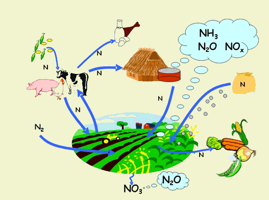
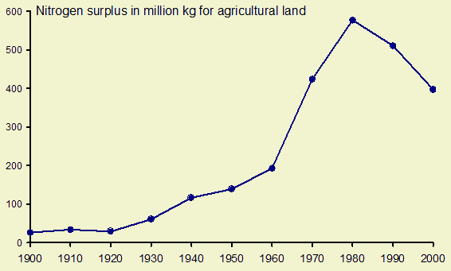
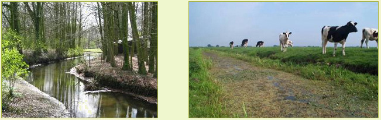

Highlights
Nitrogen surpluses in most of the EU regions in general are below 100 kg per
agricultural hectare per year.
Regions with intensive livestock production such as the Netherlands, Ireland,
Northern Italy, Malta and Brittany show higher surpluses.
In future nitrogen surpluses show a declining trend in the EU15, mainly due
to lower fertilizer input. Oppositely in the EU12 - small - increases of nitrogen
surpluses can be seen, driven by both growth of the livestock sector and higher
fertilizer consumption over time.
Nitrogen is an essential plant nutrient. The main sources of nitrogen for a
crop are fertilizer, manures, biological N fixation, and atmospheric deposition.
However, if the input of nitrogen via fertilizers and manures to a crop exceeds
the output via harvested product, the surplus of nitrogen is lost to the environment.
Part of the nitrogen is lost as harmful compounds, such as ammonia and nitrous
oxide and nitrate. The nitrogen surplus is an indicator for the loss of nitrogen
to the environment.
The calculations of the values of this indicator are based on a preliminary
methodology and data. Improvement of the methods and underlying data is still in
progress. The results therefore should be interpreted carefully and only to
assess the broad patterns and changes between scenarios and policy options.

Past developments
In intensive agricultural systems in North West Europe, the nitrogen surplus
has strongly increased in the period 1950-1980 because increasing numbers of
livestock and increased use of artificial fertilizers. In seventies and eighties,
negative effects of the high surplus of nitrogen became visible. The eutrofication
of terrestrial and aquatic ecosystems increased and nitrate concentrations in
groundwater frequently exceeded the standards for drinking water. Environmental
policies in the eighties and nineties environmental policies resulted in stabilization
and decrease in the nitrogen surplus. The figure shows the trend in nitrogen
surplus in the Netherland, showing low nitrogen surplus in the beginning of
the 20th century, the increase in the period 1950-1985 and the decrease after
1990.
In the extensive agricultural systems in Central Europe, nitrogen surplus is
small and has even decreased in the nineties, because the economical situation
did not allow to use much fertilizers.

Figure 1 - Nitrogen surplus of agricultural soils in
the Netherlands (Oenema, personal communication)
Future developments
In the high regulation scenarios Regional Communities and Global Cooperation
livestock production will rather stable in the EU27. An increase of livestock
production can be observed in the EU12 and decreases in the Low Countries, Portugal
and Italy. Together with lower inputs of fertilizer over time for cropping this
will lead to a smaller N-surplus in general for the EU15. For the EU12 slightly
higher animal production in combination with higher fertilizer use will lead
to an increase of N-surpluses in the EU12.
In the low regulation scenarios Global Economy and Continental Market livestock
production will grow in general. This is counterbalanced by lower inputs of
fertilizer over time in cropping systems in the EU15. Although inputs of fertilizer
are higher in these scenarios compared to Regional Communities and Global Cooperation
because government regulations are less strict and for the Global Economy scenario
also the production intensity of farming systems is higher.
Regions that already have high surpluses remain highest for all scenarios.
Most important drivers
The most important drivers of the nitrogen surplus are the growth of the livestock
production (see also livestock density and livestock production) and the technological
developments determining the use of artificial fertilizer.
Policy impact
Since the nitrogen surplus of agriculture is to an important degree dependent
of the livestock density and because of the fact that the livestock density
indicator is only available for the baseline situations, the maps and figures
for N-surplus of the policy options should be treated with caution. Improvement
of the livestock density indicator will enhanced the nitrogen surplus indicator
in a next version of Eururalis.
Used methodology
The nitrogen surplus of agriculture is calculated on the regional level as the
differences between the nitrogen inputs via fertilizers, manure, atmospheric
deposition, and biological nitrogen fixation and the outputs via crop yield
of nitrogen.
The nitrogen surplus is also used as indicator for the OECD
(see explanatory notes: http://www.oecd.org/dataoecd/0/11/1916652.pdf
) and the European Commission (http://ec.europa.eu/agriculture/envir/report/en/nitro_en/report.htm
)
